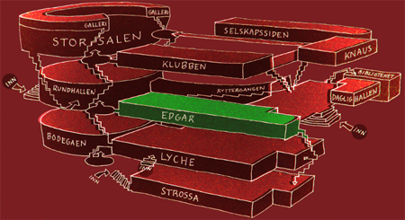

FindMyApp

Preget av lune og brune og røde vegger, dekket av bokhyller, bilder og malerier, er Edgar Studentersamfundets kafé, oppkalt etter Edgar B. Schieldrop, Samfundets første leder. Her kan du få en god kopp kaffe mens du leser dagens aviser eller høre på rolig og spennende musikk i nostalgiske og tidløse omgivelser. Du kan også utfordre dine venner i et brettspill fra vårt rikholdige utvalg. Hvis du er glad i å lese har vi et skattkammer av gamle bøker i de store bokhyllene og vinduskarmene, som bare venter på at noen blar i dem!
Visste du at?
- Edgar er oppkalt etter Edgar B. Schieldrop, Samfundets første formann. I sin tale på Samfundets ettårsdag 1. oktober 1911 kom han med utsagnet som han senere har blitt kjent for: Høiskolen vil gjøre dere til studerende, vi, Samfundet, vil gjøre dere til studenter. Den er blind som ikke øiner kløften mellom disse to ords betydning. Den som blott er det første uten å være det annet, han blir ingen mann, intet helt menneske - han kan i høiden drive det til professor.